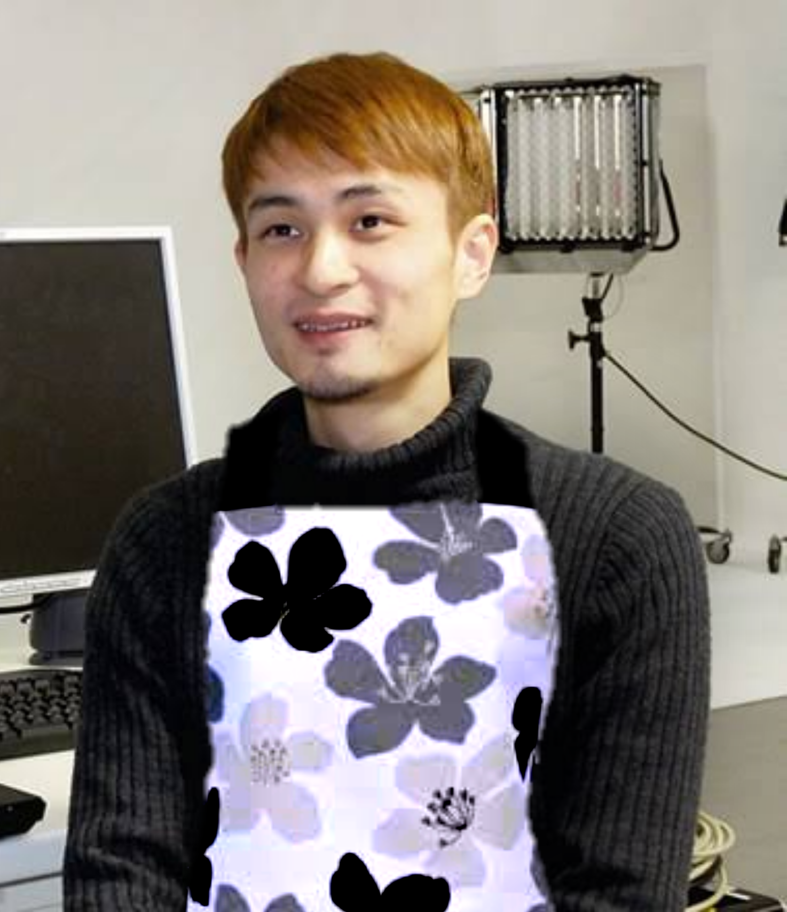

じゃがいも ３個
玉ねぎ 1/2個
にんじん 1/2個
牛肉（切り落とし) 100g
しらたき 100g
サラダ油 小さじ2
だし汁(かつおだしなど)1と1/2カップ
大豆醤油 大さじ2
みりん 大さじ3
砂糖 大さじ1/2
(1) じゃがいもはひと口大に切って水にさらし、水気をきる。玉ねぎはくし型切り、にんじんは乱切りにする。牛肉はひと口大に切る。しらたきはゆでて食べやすく切る。
(2) 鍋にサラダ油を熱して（１）の玉ねぎを炒め、牛肉を加えてさらに炒める。にんじん、じゃがいも、しらたきも入れて炒め合わせる。
(3) だし汁を注ぎ、沸騰したらアクを取り、しょうゆ、みりん、砂糖を加えて落し蓋をする。沸騰したら弱火で１５～２０分煮る。
１人分の汁物やおひたし、ごま和えなど少量のだしが必要な時にとっても便利なんです！！